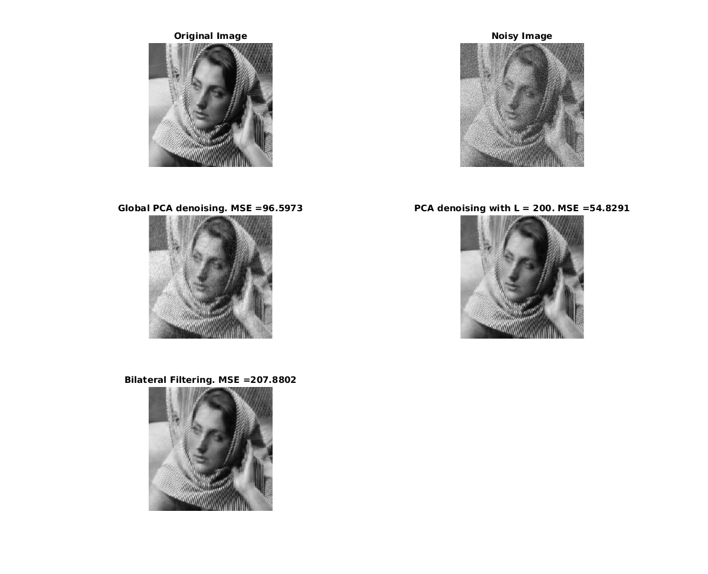

Q6. PCA based denoising and Bilateral filtering
Bhavesh Thakkar, Dhanvi Sreenivasan and Dhruv Ilesh Shah
Contents
myPCADenoising1.m
function [filtered_image] = myPCADenoising1(image) patch_size=7; p = (patch_size-1)/2; sigma = 20; window_size = 31; w = (window_size - 1 )/2; %Compute the Matrix of patches patch_matrix = zeros(49,(size(image,1)-(patch_size-1))^2); alpha_matrix_denoised = zeros(49,(size(image,1)-(patch_size-1))^2); count =1; for i = p+1 : size(image,1) - p for j = p+1 : size(image,1) - p patch_p = image(i-p : i+p,j-p:j+p); patch_matrix(:,count) = patch_p(:); count=count+1; end end %Compute the eigencoefficients of patches covariance_matrix = patch_matrix*patch_matrix'; [V, D] = eig(covariance_matrix); %[~, permutation] = sort(diag(D), 'descend'); %V = V(:, permutation); n = sqrt(sum(V.^2,1)); V = bsxfun(@rdivide, V, n); alpha = V'*patch_matrix; n_patches = size(alpha,2); L = n_patches-1; %Applying th filter on the eigencoefficient matrix horizontal_sum = sum(alpha.^2,2); for i = 1:size(alpha,2) alpha_matrix_denoised(:,i) = ... alpha(:,i)./(1 + sigma^2./(max(0 ,(1/L)*(horizontal_sum - alpha(:,i).^2) -sigma^2))); end %Reonstructing pixel values from denoised eigencoeffiecient patch_matrix_denoised = V*alpha_matrix_denoised; filtered_image = zeros(size(image)); counter = zeros(size(image)); %Reconstructing the image from patches count = 1; for i = p+1 : size(image,1) - p for j = p+1 : size(image,2) - p filtered_image(i-p : i+p,j-p:j+p) = ... filtered_image(i-p : i+p,j-p:j+p) + reshape(patch_matrix_denoised(:,count), [7 7]); counter(i-p : i+p,j-p:j+p)=counter(i-p : i+p,j-p:j+p) + 1; %counter(i,j) keeps track of number of patches that have visited a pixel (i,j) count = count +1; end end filtered_image=filtered_image./counter;
myPCADenoising2.m
function [filtered_image] = myPCADenoising2(image) patch_size=7; p = (patch_size-1)/2; sigma = 20; window_size = 31; w = (window_size - 1 )/2; noisy_image = padarray(image,[w w],inf,'both'); filtered_image = zeros(size(noisy_image)); counter = zeros(size(noisy_image)); tic %Outer two for loops to go to each pixel, inner two foor loops to find %closest patch to reference patch for i = w+p+1 : size(noisy_image,1) - w -p for j = w+p+1 : size(noisy_image,2) - w -p original_patch=noisy_image(i-p:i+p,j-p:j+p); original_patch=original_patch(:); patch_matrix = zeros(49,625); count = 1; for pi = (i-p-w) + p : (i-p + w) - p for pj = (j-p-w) + p : (j-p+w) + - p patch_p = noisy_image(pi-p : pi+p,pj-p:pj+p); patch_matrix(:,count) = patch_p(:); count = count +1; end end mse = bsxfun(@minus,patch_matrix,original_patch); mse = sum((mse.^2),1); [values, permutation] = sort( mse, 'ascend'); %MSE = 0 corresponds to original patch, -1 to remove original patch topk=min(size(find(values<inf),2)-1,200); patch_matrix= patch_matrix(:,permutation); %1st one corresoponds to original patch patch_matrix=patch_matrix(:,2:topk+1); %Constructing the covariance matrix, denoising the image and then %reconstructing it covariance_matrix = patch_matrix*patch_matrix'; [V, D] = eig(covariance_matrix); n = sqrt(sum(V.^2,1)); V = bsxfun(@rdivide, V, n); original_alpha = V'*original_patch; alpha = V'*patch_matrix; L = size(alpha,2); %Denoising the eigencoefficients denoised_alpha = original_alpha./(1 + sigma^2./(max(0 ,(1/L)*(sum((alpha.^2),2)) - sigma^2))); denoised_patch=V*denoised_alpha; %Updating the pixel values filtered_image(i-p : i+p,j-p:j+p) = ... filtered_image(i-p : i+p,j-p:j+p) + reshape(denoised_patch, [7 7]); counter(i-p : i+p,j-p:j+p)=counter(i-p : i+p,j-p:j+p) + 1; %counter(i,j) keeps track of number of patches that have visited a pixel (i,j) end end filtered_image=filtered_image./counter; filtered_image= filtered_image(w+1:size(noisy_image,1)-w,w+1:size(noisy_image,2)-w); toc
MainScript
image = imread('../data/barbara256.png');
image = double(image);
noisy_image = image + randn(size(image))*20;
tic;
img1 = myPCADenoising1(noisy_image);
MSE1 = sum(sum( (image-img1).^2))/(size(image,1)*size(image,2));
toc;
tic;
img2 = myPCADenoising2(noisy_image);
MSE2 = sum(sum( (image-img2).^2))/(size(image,1)*size(image,2));
toc;
tic;
img3 = myBilateralFiltering(noisy_image,[8 8 10]);
MSE3 = sum(sum( (image-img3).^2))/(size(image,1)*size(image,2));
toc;
Elapsed time is 1.971974 seconds.
Elapsed time is 110.584912 seconds.
Elapsed time is 110.586307 seconds.
ans =
0.0671
ans =
262.8605
ans =
258.8761
Elapsed time is 3.448226 seconds.
Plot
figure('Position',[100, 100, 1200, 1200]); subplot (3,2,1); imshow(image,[]); title('Original Image') subplot (3,2,2); imshow(noisy_image,[]); title('Noisy Image') subplot (3,2,3); imshow(img1,[]); title(strcat('Global PCA denoising. MSE = ', num2str(MSE1))) subplot (3,2,4); imshow(img2,[]); title(strcat('PCA denoising with L = 200. MSE = ', num2str(MSE2))) subplot (3,2,5); imshow(img2,[]); title(strcat('Bilateral Filtering. MSE = ', num2str(MSE3)))
Differences between Bilateral and PCA
6)c) PCA based denoising methods do better than bilateral filtering(in terms of MSE). The mean square errors have been shown in the figure. PCA filter takes into account the signal/noise estimate while updating the eigencoefficeints (i.e does not change much the coefficients having high singal-noise ratio and reduces the coefficients having low signal to noise ratio) while bilateral filter does not do anything of this sort( i.e does not give any consideration to the noise characteristic).